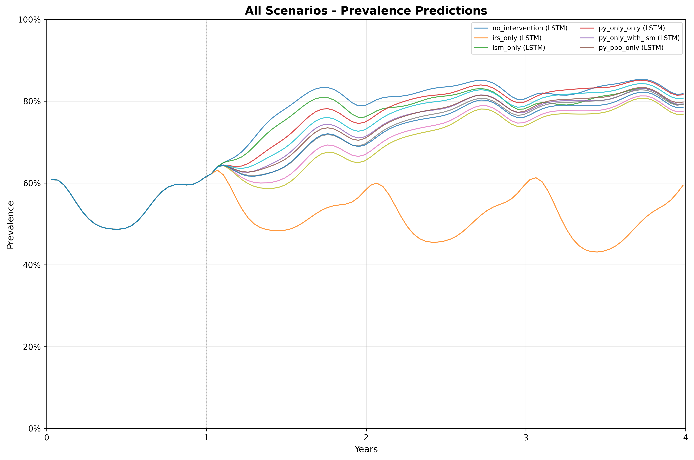
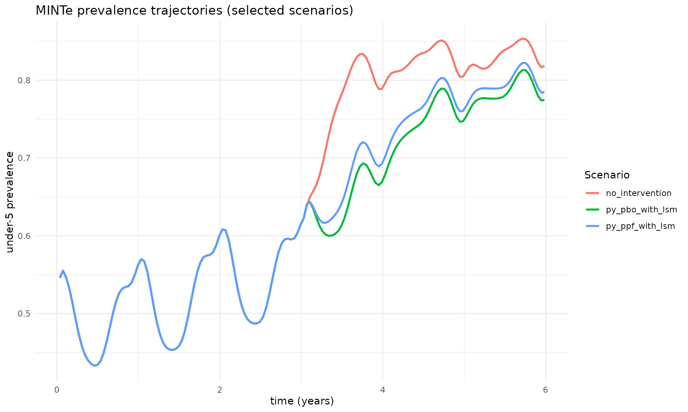

MINTverse Tutorial: R Interface for MINTe Malaria Intervention Emulator
Source:vignettes/MINTverse-tutorial.Rmd
MINTverse-tutorial.RmdMINTverse Tutorial
Note: This tutorial is an R adaptation of the original MINTverse Python tutorial, which demonstrates how the underlying Python
mintepackage works. The examples and workflow here mirror that tutorial but use the rminte R interface.
This tutorial demonstrates how to use the rminte R
package to run malaria intervention scenarios using the MINTe neural
emulator. This is the R equivalent of the Python minte
package.
2. Common R → Python equivalents
Most of what you did in R with MINTer / MINTweb and tidyverse has a direct analogue in Python + pandas.
| Task | R / tidyverse | Python / pandas |
|---|---|---|
| Data frame |
data.frame(), tibble()
|
pd.DataFrame() |
| Read CSV | readr::read_csv("x.csv") |
pd.read_csv("x.csv") |
| Filter rows | df %>% filter(var == 1) |
df[df["var"] == 1] |
| Select columns | df %>% select(a, b) |
df[["a", "b"]] |
| Arrange / sort | df %>% arrange(a) |
df.sort_values("a") |
| Grouped summary | df %>% group_by(a) %>% summarise(mean(b)) |
df.groupby("a")["b"].mean().reset_index() |
| Pipe | %>% |
chain methods: df.query(...).groupby(...).mean()
|
| Run scenarios | run_minter_scenarios(...) |
run_minter_scenarios(...) |
| Missing value (numeric) | NA_real_ |
numpy.nan (imported as np.nan) |
| Missing value (string) | NA_character_ |
None |
Conceptually:
- In R you pass vectors (
c(0.3, 0.5, 0.7)); - in Python you pass lists or NumPy arrays
(
[0.3, 0.5, 0.7]ornp.array([...])). -
run_minter_scenariosis the Python analogue ofrun_mintweb_controller: you give it vectors of parameters, and it runs all scenarios at once.
3. Imports and basic configuration
Here we import:
-
dplyrandtidyrfor data handling -
run_minter_scenarios– the main controller -
create_scenario_plots_mpl– a built-in matplotlib plotting helper -
plot_prevalence/plot_cases– native R/ggplot2 plotting functions
4. What run_minter_scenarios does
At a high level, run_minter_scenarios:
- Back-calculates EIR from current prevalence and interventions using the pre-trained estiMINT XGBoost model.
-
Builds a scenario table with:
- baseline EIR
- current and future ITN/IRS/LSM
- vector behaviour (
Q0,phi) - resistance & net quality (
dn0_use,dn0_future)
-
Runs the neural emulator to predict:
- under-5 daily prevalence trajectories
- all-age daily clinical incidence trajectories per 1000
-
Returns a results object (similar to an R list)
with:
-
results$prevalence– Data frame of prevalence over time for each scenario -
results$cases– Data frame of clinical cases over time for each scenario -
results$scenario_meta– Per-scenario metadata, incl. EIR validity -
results$eir_valid– TRUE/FALSE flag -
results$benchmarks– (optional) runtime timings
-
In this tutorial we treat the ML models as a black box: you don’t have to write or edit any neural-network code to use MINTe.
5. A single simple scenario
Here we run one scenario by passing single values. This is conceptually the same as a one-row data frame.
# Example: a single scenario
scenario_tag <- "example_scenario"
res_use <- 0.2 # current resistance
py_only <- 0.3
py_pbo <- 0.2
py_pyrrole <- 0.1
py_ppf <- 0.05
prev <- 0.55 # current under-5 prevalence at decision time
Q0 <- 0.92 # proportion of bites indoors
phi <- 0.85 # proportion of bites while people are in bed
season <- 0 # 0 = perennial, 1 = strongly seasonal
irs <- 0.4 # current IRS coverage
irs_future <- 0.4 # future IRS coverage
lsm <- 0.2 # future LSM coverage
routine <- 1 # 1 = routine ITN distribution on, 0 = off
# Future ITNs: here we scale up py-only nets to 45% coverage
itn_future <- 0.45
net_type_future <- "py_only"
res_one <- run_minter_scenarios(
scenario_tag = scenario_tag,
res_use = res_use,
py_only = py_only,
py_pbo = py_pbo,
py_pyrrole = py_pyrrole,
py_ppf = py_ppf,
prev = prev,
Q0 = Q0,
phi = phi,
season = season,
irs = irs,
itn_future = itn_future,
net_type_future = net_type_future,
irs_future = irs_future,
routine = routine,
lsm = lsm
)
res_one
#> MINTer Results
#> ==============
#> Prevalence predictions: 156 rows
#> Cases predictions: 156 rows
#> Scenarios: 1
#> EIR valid: TRUE6. What MINTe returns (res$prevalence and
res$cases)
The result object exposes the main outputs as attributes:
-
res$prevalence– Data frame with columns like:-
index(scenario index) -
timestep(time index, in 14-day steps) -
prevalence(under-5 prevalence) -
model_type(e.g. “LSTM”) -
scenario/scenario_tag -
eir_valid(whether the EIR is inside the calibrated range)
-
-
res$cases– Data frame with similar structure, but withcasesinstead ofprevalence
Let’s look at the first few rows to get a feel for this structure.
cat("Prevalence (head):\n")
#> Prevalence (head):
head(res_one$prevalence)
#> index timestep prevalence model_type scenario scenario_tag
#> 1 0 1 0.5459521 LSTM example_scenario example_scenario
#> 2 0 2 0.5551386 LSTM example_scenario example_scenario
#> 3 0 3 0.5465310 LSTM example_scenario example_scenario
#> 4 0 4 0.5329272 LSTM example_scenario example_scenario
#> 5 0 5 0.5144109 LSTM example_scenario example_scenario
#> 6 0 6 0.4937868 LSTM example_scenario example_scenario
#> eir_valid
#> 1 TRUE
#> 2 TRUE
#> 3 TRUE
#> 4 TRUE
#> 5 TRUE
#> 6 TRUE
cat("\nCases (head):\n")
#>
#> Cases (head):
head(res_one$cases)
#> index timestep cases model_type scenario scenario_tag
#> 1 0 1 2.5116408 LSTM example_scenario example_scenario
#> 2 0 2 1.5747907 LSTM example_scenario example_scenario
#> 3 0 3 0.7914336 LSTM example_scenario example_scenario
#> 4 0 4 0.5347684 LSTM example_scenario example_scenario
#> 5 0 5 0.4381712 LSTM example_scenario example_scenario
#> 6 0 6 0.3793794 LSTM example_scenario example_scenario
#> eir_valid
#> 1 TRUE
#> 2 TRUE
#> 3 TRUE
#> 4 TRUE
#> 5 TRUE
#> 6 TRUE
cat("\nColumns in prevalence table:", names(res_one$prevalence), "\n")
#>
#> Columns in prevalence table: index timestep prevalence model_type scenario scenario_tag eir_valid
cat("Columns in cases table:", names(res_one$cases), "\n")
#> Columns in cases table: index timestep cases model_type scenario scenario_tag eir_valid7. Running multiple scenarios (R run_mintweb_controller
→ Python)
In R you might have run something like:
high_prev <- run_mintweb_controller(
scenario_tag = c("no_intervention", "irs_only", ...),
res_use = c(0.2, 0.2, ...),
...
)The equivalent is to pass vectors of equal length to
run_minter_scenarios. Each position i defines
one scenario.
Below we reproduce the high-prevalence example.
# High-prevalence example with multiple intervention packages
scenario_tag <- c(
"no_intervention", "irs_only", "lsm_only", "py_only_only",
"py_only_with_lsm", "py_pbo_only", "py_pbo_with_lsm", "py_pyrrole_only",
"py_pyrrole_with_lsm", "py_ppf_only", "py_ppf_with_lsm"
)
n <- length(scenario_tag)
res_use <- rep(0.2, n)
py_only <- rep(0.3, n)
py_pbo <- rep(0.2, n)
py_pyrrole <- rep(0.1, n)
py_ppf <- rep(0.05, n)
prev <- rep(0.55, n)
Q0 <- rep(0.92, n)
phi <- rep(0.85, n)
season <- rep(0, n)
irs <- rep(0.4, n)
itn_future <- c(
0.00, 0.00, 0.00, # no nets for the first three scenarios
0.45, 0.45, # py_only w/wo LSM
0.45, 0.45, # py_pbo w/wo LSM
0.45, 0.45, # py_pyrrole w/wo LSM
0.45, 0.45 # py_ppf w/wo LSM
)
net_type_future <- c(
NA, NA, NA,
"py_only", "py_only",
"py_pbo", "py_pbo",
"py_pyrrole", "py_pyrrole",
"py_ppf", "py_ppf"
)
irs_future <- c(
0.0, 0.5, 0.0, # second scenario increases IRS
0.0, 0.0,
0.0, 0.0,
0.0, 0.0,
0.0, 0.0
)
routine <- c(
0, 0, 0, # first three: no routine distribution
1, 1,
1, 1,
1, 1,
1, 1
)
lsm <- c(
0.0, 0.0, 0.2, # third scenario: LSM only
0.0, 0.2,
0.0, 0.2,
0.0, 0.2,
0.0, 0.2
)
res <- run_minter_scenarios(
scenario_tag = scenario_tag,
res_use = res_use,
py_only = py_only,
py_pbo = py_pbo,
py_pyrrole = py_pyrrole,
py_ppf = py_ppf,
prev = prev,
Q0 = Q0,
phi = phi,
season = season,
irs = irs,
itn_future = itn_future,
net_type_future = net_type_future,
irs_future = irs_future,
routine = routine,
lsm = lsm
)
cat("Prevalence shape:", nrow(res$prevalence), "x", ncol(res$prevalence), "\n")
#> Prevalence shape: 1716 x 7
cat("Cases shape:", nrow(res$cases), "x", ncol(res$cases), "\n")
#> Cases shape: 1716 x 7
head(res$prevalence)
#> index timestep prevalence model_type scenario scenario_tag
#> 1 0 1 0.5459521 LSTM no_intervention no_intervention
#> 2 0 2 0.5551386 LSTM no_intervention no_intervention
#> 3 0 3 0.5465310 LSTM no_intervention no_intervention
#> 4 0 4 0.5329272 LSTM no_intervention no_intervention
#> 5 0 5 0.5144110 LSTM no_intervention no_intervention
#> 6 0 6 0.4937868 LSTM no_intervention no_intervention
#> eir_valid
#> 1 TRUE
#> 2 TRUE
#> 3 TRUE
#> 4 TRUE
#> 5 TRUE
#> 6 TRUE8. Exploring results in data form
Typical tasks a malaria researcher might want:
- Look at the first few rows:
head() - Filter to a specific scenario or time window
- Summarise average prevalence / incidence over a period
- Compare scenarios side-by-side
We do this with dplyr, which plays the same role as pandas in Python.
prev_df <- res$prevalence
cases_df <- res$cases
# First few rows of each
cat("Prevalence:\n")
#> Prevalence:
head(prev_df)
#> index timestep prevalence model_type scenario scenario_tag
#> 1 0 1 0.5459521 LSTM no_intervention no_intervention
#> 2 0 2 0.5551386 LSTM no_intervention no_intervention
#> 3 0 3 0.5465310 LSTM no_intervention no_intervention
#> 4 0 4 0.5329272 LSTM no_intervention no_intervention
#> 5 0 5 0.5144110 LSTM no_intervention no_intervention
#> 6 0 6 0.4937868 LSTM no_intervention no_intervention
#> eir_valid
#> 1 TRUE
#> 2 TRUE
#> 3 TRUE
#> 4 TRUE
#> 5 TRUE
#> 6 TRUE
cat("\nCases:\n")
#>
#> Cases:
head(cases_df)
#> index timestep cases model_type scenario scenario_tag eir_valid
#> 1 0 1 2.5116408 LSTM no_intervention no_intervention TRUE
#> 2 0 2 1.5747905 LSTM no_intervention no_intervention TRUE
#> 3 0 3 0.7914336 LSTM no_intervention no_intervention TRUE
#> 4 0 4 0.5347682 LSTM no_intervention no_intervention TRUE
#> 5 0 5 0.4381717 LSTM no_intervention no_intervention TRUE
#> 6 0 6 0.3793796 LSTM no_intervention no_intervention TRUE
# Unique scenarios
cat("\nScenarios:", unique(prev_df$scenario), "\n")
#>
#> Scenarios: no_intervention irs_only lsm_only py_only_only py_only_with_lsm py_pbo_only py_pbo_with_lsm py_pyrrole_only py_pyrrole_with_lsm py_ppf_only py_ppf_with_lsm
# Example: subset to a single scenario
subset_df <- prev_df %>% filter(scenario == "py_pbo_with_lsm")
head(subset_df)
#> index timestep prevalence model_type scenario scenario_tag
#> 1 6 1 0.5459521 LSTM py_pbo_with_lsm py_pbo_with_lsm
#> 2 6 2 0.5551386 LSTM py_pbo_with_lsm py_pbo_with_lsm
#> 3 6 3 0.5465310 LSTM py_pbo_with_lsm py_pbo_with_lsm
#> 4 6 4 0.5329272 LSTM py_pbo_with_lsm py_pbo_with_lsm
#> 5 6 5 0.5144110 LSTM py_pbo_with_lsm py_pbo_with_lsm
#> 6 6 6 0.4937868 LSTM py_pbo_with_lsm py_pbo_with_lsm
#> eir_valid
#> 1 TRUE
#> 2 TRUE
#> 3 TRUE
#> 4 TRUE
#> 5 TRUE
#> 6 TRUE
# Example: summary over the whole time horizon
mean_prev_by_scenario <- prev_df %>%
group_by(scenario) %>%
summarise(prevalence = mean(prevalence, na.rm = TRUE)) %>%
arrange(desc(prevalence))
cat("\nMean prevalence over all timesteps by scenario:\n")
#>
#> Mean prevalence over all timesteps by scenario:
print(mean_prev_by_scenario)
#> # A tibble: 11 × 2
#> scenario prevalence
#> <chr> <dbl>
#> 1 no_intervention 0.664
#> 2 py_only_only 0.653
#> 3 lsm_only 0.652
#> 4 py_ppf_only 0.646
#> 5 py_only_with_lsm 0.639
#> 6 py_pbo_only 0.639
#> 7 py_pyrrole_only 0.634
#> 8 py_ppf_with_lsm 0.632
#> 9 py_pbo_with_lsm 0.623
#> 10 py_pyrrole_with_lsm 0.618
#> 11 irs_only 0.5239. Using the built-in plotting helper:
create_scenario_plots_mpl
MINTe provides a convenience function
create_scenario_plots_mpl that wraps the Python matplotlib
plotting functionality:
- Takes the
res$prevalence(and/orres$cases) table - Automatically generates per-scenario plots of prevalence and/or cases over time
- Saves them as image files (e.g.
.png) in a chosen folder
This is the quickest way to get a full set of figures for a gallery of scenarios.
Note: For native R plotting with ggplot2, you can
also use plot_prevalence() or plot_cases()
which provide the same functionality but return ggplot2 objects that
integrate better with R workflows.
# Create a folder for plots (if it doesn't exist)
dir.create("plots", showWarnings = FALSE)
# Use the built-in matplotlib plotting helper
plots <- create_scenario_plots_mpl(
res$prevalence,
output_dir = "plots/",
plot_type = "both" # "individual", "combined", or "both"
)
cat("Created plots:", names(plots), "\n")The plots have been saved to the plots/ folder. Here is
the combined plot:

10. Optional: custom inline plot
For more control, you can create custom plots using ggplot2. Here we convert timesteps to years and plot a subset of key scenarios:
# Make a copy and add a 'year' column (timestep * 14 days → years)
prev_df_years <- res$prevalence
prev_df_years$year <- prev_df_years$timestep * 14 / 365.0
# Example: plot prevalence trajectories for a few key scenarios inline
key_scenarios <- c("no_intervention", "py_pbo_with_lsm", "py_ppf_with_lsm")
prev_df_years %>%
filter(scenario %in% key_scenarios) %>%
arrange(year) %>%
ggplot(aes(x = year, y = prevalence, color = scenario)) +
geom_line(linewidth = 1) +
labs(
title = "MINTe prevalence trajectories (selected scenarios)",
x = "time (years)",
y = "under-5 prevalence",
color = "Scenario"
) +
theme_minimal() +
theme(legend.position = "right")
11. Summary statistics
# Mean prevalence by scenario (sorted)
mean_prev <- res$prevalence %>%
group_by(scenario) %>%
summarise(prevalence = mean(prevalence, na.rm = TRUE)) %>%
arrange(desc(prevalence))
cat("Mean prevalence over all timesteps by scenario:\n")
#> Mean prevalence over all timesteps by scenario:
print(mean_prev)
#> # A tibble: 11 × 2
#> scenario prevalence
#> <chr> <dbl>
#> 1 no_intervention 0.664
#> 2 py_only_only 0.653
#> 3 lsm_only 0.652
#> 4 py_ppf_only 0.646
#> 5 py_only_with_lsm 0.639
#> 6 py_pbo_only 0.639
#> 7 py_pyrrole_only 0.634
#> 8 py_ppf_with_lsm 0.632
#> 9 py_pbo_with_lsm 0.623
#> 10 py_pyrrole_with_lsm 0.618
#> 11 irs_only 0.523Session Info
sessionInfo()
#> R version 4.5.2 (2025-10-31)
#> Platform: x86_64-pc-linux-gnu
#> Running under: Ubuntu 24.04.3 LTS
#>
#> Matrix products: default
#> BLAS: /usr/lib/x86_64-linux-gnu/openblas-pthread/libblas.so.3
#> LAPACK: /usr/lib/x86_64-linux-gnu/openblas-pthread/libopenblasp-r0.3.26.so; LAPACK version 3.12.0
#>
#> locale:
#> [1] LC_CTYPE=C.UTF-8 LC_NUMERIC=C LC_TIME=C.UTF-8
#> [4] LC_COLLATE=C.UTF-8 LC_MONETARY=C.UTF-8 LC_MESSAGES=C.UTF-8
#> [7] LC_PAPER=C.UTF-8 LC_NAME=C LC_ADDRESS=C
#> [10] LC_TELEPHONE=C LC_MEASUREMENT=C.UTF-8 LC_IDENTIFICATION=C
#>
#> time zone: UTC
#> tzcode source: system (glibc)
#>
#> attached base packages:
#> [1] stats graphics grDevices utils datasets methods base
#>
#> other attached packages:
#> [1] ggplot2_4.0.1 tidyr_1.3.1 dplyr_1.1.4 rminte_0.1.0
#>
#> loaded via a namespace (and not attached):
#> [1] Matrix_1.7-4 gtable_0.3.6 jsonlite_2.0.0 compiler_4.5.2
#> [5] tidyselect_1.2.1 Rcpp_1.1.0 jquerylib_0.1.4 scales_1.4.0
#> [9] systemfonts_1.3.1 textshaping_1.0.4 png_0.1-8 yaml_2.3.11
#> [13] fastmap_1.2.0 here_1.0.2 reticulate_1.44.1 lattice_0.22-7
#> [17] R6_2.6.1 labeling_0.4.3 generics_0.1.4 knitr_1.50
#> [21] tibble_3.3.0 desc_1.4.3 rprojroot_2.1.1 RColorBrewer_1.1-3
#> [25] bslib_0.9.0 pillar_1.11.1 rlang_1.1.6 utf8_1.2.6
#> [29] cachem_1.1.0 xfun_0.54 S7_0.2.1 fs_1.6.6
#> [33] sass_0.4.10 cli_3.6.5 withr_3.0.2 pkgdown_2.2.0
#> [37] magrittr_2.0.4 digest_0.6.39 grid_4.5.2 rappdirs_0.3.3
#> [41] lifecycle_1.0.4 vctrs_0.6.5 evaluate_1.0.5 glue_1.8.0
#> [45] farver_2.1.2 ragg_1.5.0 rmarkdown_2.30 purrr_1.2.0
#> [49] tools_4.5.2 pkgconfig_2.0.3 htmltools_0.5.9